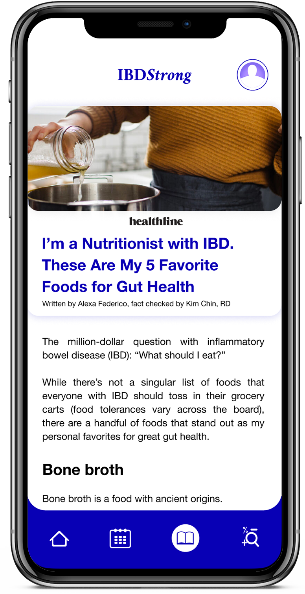

UI/UX Designer + Researcher
Inflammatory Bowel Disease is an autoimmune disease that affects patients’ overall quality of life. Treatment in the clinical setting largely focuses on pharmaceutical solutions to achieve remission, often forgetting that lifestyle habits contribute to the pathogenesis of the disease. While research typically dismisses the validity of complementary medicine, a study published in the Journal of Clinical Medicine in connection with the German Crohn’s Colitis Foundation and the Department of Internal and Integrative Medicine at the Kliniken Essen Mitte found that lifestyle changes improve patients’ overall health-related quality of life (Langhorst et al, 2020). This suggests that patients would benefit from resources facilitating complementary medicine techniques such as nutrition, exercise, and stress management. IBDStrong recognizes how important it is that patients track their habits to pinpoint negative behavior and prevent worsening of their disease. This project believes that patients can improve their quality of life by getting the power back. Their disease shouldn't run their lives —they should.
Just before the pandemic, I was diagnosed with IBD. This project is my way of giving back to the autoimmune community —through design.
Just before the pandemic, I was diagnosed with IBD. This project is my way of giving back to the autoimmune community —through design.
6.8 million people around the world are afflicted with Inflammatory Bowel Disease (Silangcruz et al, 2021)
There is a tautological relationship between stress and autoimmune pathology (Boynes-Shuck, 2018)
Generally, autoimmunity researchers focus on etiology instead of patients' quality of life or lifestyle-based disase management (Cohen, 2004)
Chronic illness therapists help their patients after diagnoses by creating a collaborative relationship with doctors and approaching disease management with action-oriented agendas —meaning they support both traditional and complementary medicine (White)
IBD is hard to manage —there are 8 clinically recommended diets with 274 foods prohibited
One patient described remission as having more “energy, [better] sleep, no nausea, mental clarity, more confidence, [feeling] better, clothes fit, not out of breath going short distances” —an overall improved quality of life ("Official IBD Support Group", Facebook)
Another patient said she "got power back from the disease" through physical activity, noting it kept her "mind balanced" and gave her "a sense of normalcy" from her pre-diagnosis life ("Ulcerative Colitis Support Group", Facebook)
A patient struggling with IBD admitted her struggles are rooted in not knowing how to "make a yummy recipe with cooked vegetables" ("Official IBD Support Group", Facebook)
There is a tautological relationship between stress and autoimmune pathology (Boynes-Shuck, 2018)
Generally, autoimmunity researchers focus on etiology instead of patients' quality of life or lifestyle-based disase management (Cohen, 2004)
Chronic illness therapists help their patients after diagnoses by creating a collaborative relationship with doctors and approaching disease management with action-oriented agendas —meaning they support both traditional and complementary medicine (White)
IBD is hard to manage —there are 8 clinically recommended diets with 274 foods prohibited
One patient described remission as having more “energy, [better] sleep, no nausea, mental clarity, more confidence, [feeling] better, clothes fit, not out of breath going short distances” —an overall improved quality of life ("Official IBD Support Group", Facebook)
Another patient said she "got power back from the disease" through physical activity, noting it kept her "mind balanced" and gave her "a sense of normalcy" from her pre-diagnosis life ("Ulcerative Colitis Support Group", Facebook)
A patient struggling with IBD admitted her struggles are rooted in not knowing how to "make a yummy recipe with cooked vegetables" ("Official IBD Support Group", Facebook)

Give the power back to the patient by constructing action-oriented lifestyle changes
Promote education about IBD and the recommended lifestyle improvements
Generate insights on the lifestyle data collected on the app
Track the patient/user's compliance with IBDStrong's complementary medical approach
Promote education about IBD and the recommended lifestyle improvements
Generate insights on the lifestyle data collected on the app
Track the patient/user's compliance with IBDStrong's complementary medical approach

The habits include:
DISEASE SYMPTOMS, MEDICATION COMPLIANCE, FOOD, SLEEP, EXERCISE, MENTAL HEALTH, MOOD, WORK DEADLINES
By tracking a patient's compliance with IBD-approved habits, the app can provide data that can glean insight for the patient and improve their communication in the clinical setting. For example, if a patient does low-intensity exercise every day, maintains low levels of stress, avoids trigger foods, sleeps adequately, and keeps their brain calm, they should present better disease symptoms. If a patient does not do this, maybe they will experience more IBD symptoms. However, that patient will also be able to look over their habits and make adjustments. This is the main way IBDStrong is designed to bring power back to the patient —by facilitating a greater awareness of how the body is doing.
This feature can be observed in the graphic to the right.
DISEASE SYMPTOMS, MEDICATION COMPLIANCE, FOOD, SLEEP, EXERCISE, MENTAL HEALTH, MOOD, WORK DEADLINES
By tracking a patient's compliance with IBD-approved habits, the app can provide data that can glean insight for the patient and improve their communication in the clinical setting. For example, if a patient does low-intensity exercise every day, maintains low levels of stress, avoids trigger foods, sleeps adequately, and keeps their brain calm, they should present better disease symptoms. If a patient does not do this, maybe they will experience more IBD symptoms. However, that patient will also be able to look over their habits and make adjustments. This is the main way IBDStrong is designed to bring power back to the patient —by facilitating a greater awareness of how the body is doing.
This feature can be observed in the graphic to the right.

As mentioned before, the prototype is designed for patients to glean insight into their disease symptoms. While reading the log of daily habits is strong enough to facilitate that capability, the prototype goes a step further by visualizing habits that have been logged into the application. IBDStrong breaks down the logged habits into data points, visually —otherwise known as data visualization. This feature is designed to help users glean insight into their lifestyle peaks and pitfalls. If they intend to change habits, this feature will figure out which ones they should change and how.
A data visualization-related interface can be seen to the left of this text.
A data visualization-related interface can be seen to the left of this text.

We all know that tailoring an app experience to a user makes it more likely that the app will become useful to the user. And, I didn’t want to build this app for it to not be useful and just be deleted. So, during my social media research, I paid attention to the person posting for help —mothers, spouses, brothers, sisters, and patients, themselves. While more patients post on Facebook IBD support groups than any other demographic, it is still substantial how many worried family members were looking for information on the disease. This observation made me realize I needed to keep into account everyone affected by the disease.
To tailor my app, I created a survey that stands as a requirement upon registration with the app. The registration survey can be found to the right.
To tailor my app, I created a survey that stands as a requirement upon registration with the app. The registration survey can be found to the right.

The last and final key feature I wanted to provide by way of this application is knowledge, especially when pier-reviewed and fact-checked. However, the main reason why people avoid knowledge is that it takes effort to research. So, I wanted to make it easier for my app users to reach relevant information on their disease and how to manage it. In my case, hard-science-based peer-reviewed medical journals have been the key to a calmer mind regarding IBD.
Nothing can beat the realization that we are not as alone in the world despite what our brains tell us —abnormal bowel issues included. Comfort by association is a superpower that technology has handed us in the 21st century. And, we should be grateful for it and USE it. —That’s the reason why I wanted research to be part of the IBDStrong experience. I know that there will be other people seeking answers just like me and they should know they are not the only ones seeking out answers.
The educational tools included in this app can be found on the left.
All the ways this app tailorizes its experience can be seen to the left of this text.

All the ways this app tailorizes its experience can be seen to the left of this text.
WORKS CITED
“Fodmap Food List.” IBS Diets, 2 Apr. 2021, https://www.ibsdiets.org/fodmap-diet/fodmap-food-list/.
Gunnars, Kris. “Mediterranean Diet 101: Meal Plan, Foods List, and Tips.” Healthline, Healthline Media, 25 Oct. 2021, https://www.healthline.com/nutrition/mediterranean-diet-meal-plan.
Cohen, E. (2004). “Myself as an Other: On Autoimmunity and ‘Other’ Paradoxes”. Medical Humanities, Vol. 30, pp. 7-11. https://womens-studies.rutgers.edu/images/stories/faculty/Myself_as_an_Other.pdf
Boynes-Shuck, Ashley. (2018). “Stress can be especially detrimental to those with autoimmune diseases”. Healthline. https://www.healthline.com/health-news/stress-can-be-especially-detrimental-to-those-wi th-autoimmune-diseases
Krans, Brian. “FODMAP Diet Can Help People with IBD.” Healthline, Healthline Media, 4 Oct. 2019, https://www.healthline.com/health-news/low-carbohydrate-diet-helps-with-ibd.
Langhorst, Jost, et al. “Comprehensive Lifestyle-Modification in Patients with Ulcerative Colitis-A Randomized Controlled Trial.” Journal of Clinical Medicine, MDPI, 24 Sept. 2020, https://www.ncbi.nlm.nih.gov/pmc/articles/PMC7599849/.
“Low-Fiber Foods.” American Cancer Society, https://www.cancer.org/treatment/survivorship-during-and-after-treatment/coping/nutrition/low-fiber-foods.html.
Michelle. “AIP Diet Food List (with a Free Printable Pdf!).” Unbound Wellness, 6 Aug. 2018, https://unboundwellness.com/aip-diet-food-list-with-a-free-printable-pdf/.
“Official IBD Support Group.” Facebook, https://www.facebook.com/groups/753745014806284.
Satrazemis, RD, Emmie. “AIP Food List: What You Should Be Eating.” Healthy Meal Delivery - Trifecta Nutrition, Trifecta Inc., https://www.trifectanutrition.com/health/aip-food-list-what-you-should-be-eating.
Silangcruz K, Nishimura Y, Czech T, Kimura N, Hagiya H, Koyama T, Otsuka F Impact of the World Inflammatory Bowel Disease Day and Crohn’s and Colitis Awareness Week on Population Interest Between 2016 and 2020: Google Trends Analysis JMIR Infodemiology 2021;1(1):e32856 doi: 10.2196/32856
“Ulcerative Colitis Support Group.” Facebook, https://www.facebook.com/groups/UlcerativeColitisSupport.
“UMass Medical School - Worcester.” UMass Chan Medical School, 26 Sept. 2015, https://www.umassmed.edu/nutrition/ibd/gastrointestinal/ibdquickview/.
Veloso, Hazel Galon. “FODMAP Diet: What You Need to Know.” Johns Hopkins Medicine, Johns Hopkins University, https://www.hopkinsmedicine.org/health/wellness-and-prevention/fodmap-diet-what-you-need-to-know.
Whelan, Corey. “Low Fiber Diet: Foods, Plans, and More.” Healthline, Healthline Media, 2 July 2020, https://www.healthline.com/health/low-fiber-diet.
White CA. Cognitive behavioral principles in managing chronic disease. West J Med. 2001 Nov;175(5):338-42. doi: 10.1136/ewjm.175.5.338. PMID: 11694487; PMCID: PMC1071616.
“Fodmap Food List.” IBS Diets, 2 Apr. 2021, https://www.ibsdiets.org/fodmap-diet/fodmap-food-list/.
Gunnars, Kris. “Mediterranean Diet 101: Meal Plan, Foods List, and Tips.” Healthline, Healthline Media, 25 Oct. 2021, https://www.healthline.com/nutrition/mediterranean-diet-meal-plan.
Cohen, E. (2004). “Myself as an Other: On Autoimmunity and ‘Other’ Paradoxes”. Medical Humanities, Vol. 30, pp. 7-11. https://womens-studies.rutgers.edu/images/stories/faculty/Myself_as_an_Other.pdf
Boynes-Shuck, Ashley. (2018). “Stress can be especially detrimental to those with autoimmune diseases”. Healthline. https://www.healthline.com/health-news/stress-can-be-especially-detrimental-to-those-wi th-autoimmune-diseases
Krans, Brian. “FODMAP Diet Can Help People with IBD.” Healthline, Healthline Media, 4 Oct. 2019, https://www.healthline.com/health-news/low-carbohydrate-diet-helps-with-ibd.
Langhorst, Jost, et al. “Comprehensive Lifestyle-Modification in Patients with Ulcerative Colitis-A Randomized Controlled Trial.” Journal of Clinical Medicine, MDPI, 24 Sept. 2020, https://www.ncbi.nlm.nih.gov/pmc/articles/PMC7599849/.
“Low-Fiber Foods.” American Cancer Society, https://www.cancer.org/treatment/survivorship-during-and-after-treatment/coping/nutrition/low-fiber-foods.html.
Michelle. “AIP Diet Food List (with a Free Printable Pdf!).” Unbound Wellness, 6 Aug. 2018, https://unboundwellness.com/aip-diet-food-list-with-a-free-printable-pdf/.
“Official IBD Support Group.” Facebook, https://www.facebook.com/groups/753745014806284.
Satrazemis, RD, Emmie. “AIP Food List: What You Should Be Eating.” Healthy Meal Delivery - Trifecta Nutrition, Trifecta Inc., https://www.trifectanutrition.com/health/aip-food-list-what-you-should-be-eating.
Silangcruz K, Nishimura Y, Czech T, Kimura N, Hagiya H, Koyama T, Otsuka F Impact of the World Inflammatory Bowel Disease Day and Crohn’s and Colitis Awareness Week on Population Interest Between 2016 and 2020: Google Trends Analysis JMIR Infodemiology 2021;1(1):e32856 doi: 10.2196/32856
“Ulcerative Colitis Support Group.” Facebook, https://www.facebook.com/groups/UlcerativeColitisSupport.
“UMass Medical School - Worcester.” UMass Chan Medical School, 26 Sept. 2015, https://www.umassmed.edu/nutrition/ibd/gastrointestinal/ibdquickview/.
Veloso, Hazel Galon. “FODMAP Diet: What You Need to Know.” Johns Hopkins Medicine, Johns Hopkins University, https://www.hopkinsmedicine.org/health/wellness-and-prevention/fodmap-diet-what-you-need-to-know.
Whelan, Corey. “Low Fiber Diet: Foods, Plans, and More.” Healthline, Healthline Media, 2 July 2020, https://www.healthline.com/health/low-fiber-diet.
White CA. Cognitive behavioral principles in managing chronic disease. West J Med. 2001 Nov;175(5):338-42. doi: 10.1136/ewjm.175.5.338. PMID: 11694487; PMCID: PMC1071616.